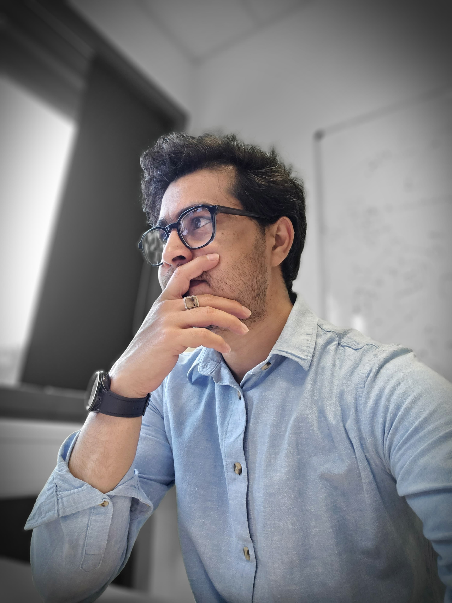

I turn research into real products — deepfake detectors, spacecraft trackers, behavior analyzers. 6 years at INRIA and the University of Luxembourg. Marie Curie Fellow. Now bringing that depth to industry.

Token-aligned lightweight adapters injected into vision foundation models for 6-DoF spacecraft pose estimation. Achieves 3.3× improvement in keypoint localization using less than 5% additional parameters. Delivered 31% reduction in pose error on SPADES and 2.5× lower error on SPARK.
Scaling temporal action detection with transformer-enhanced spatial-temporal adaptation. Co-first-author work introducing a new adaptation paradigm for long untrimmed video understanding on large-scale benchmarks.
End-to-end system for recognizing social interactions and severity estimation in real-world therapy sessions. Combines weakly-supervised learning with large-scale video pipelines using YOLO, DeepSORT, and SAM to handle occlusions and noisy clinical environments.
Dual-channel CNN for unconstrained 3D gaze estimation from natural face images with real-time webcam tracking. Designed for low-cost accessible setups — no specialized eye-tracking hardware required.
I'm looking for senior ML / computer vision engineering roles where I can apply my research depth to real-world products. Open to remote, hybrid, and relocation within France.